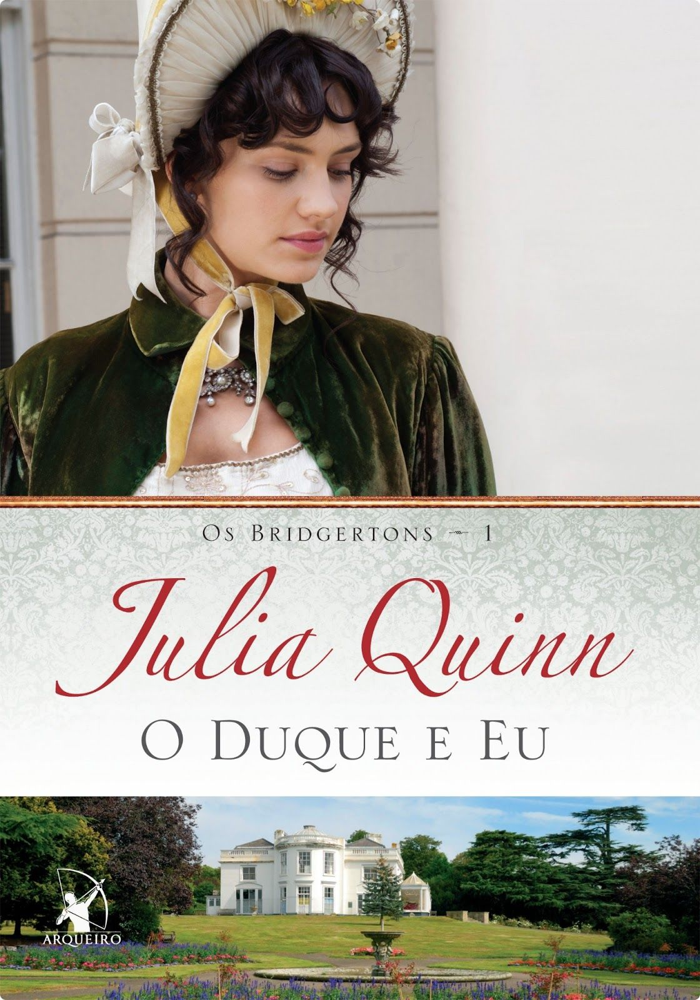
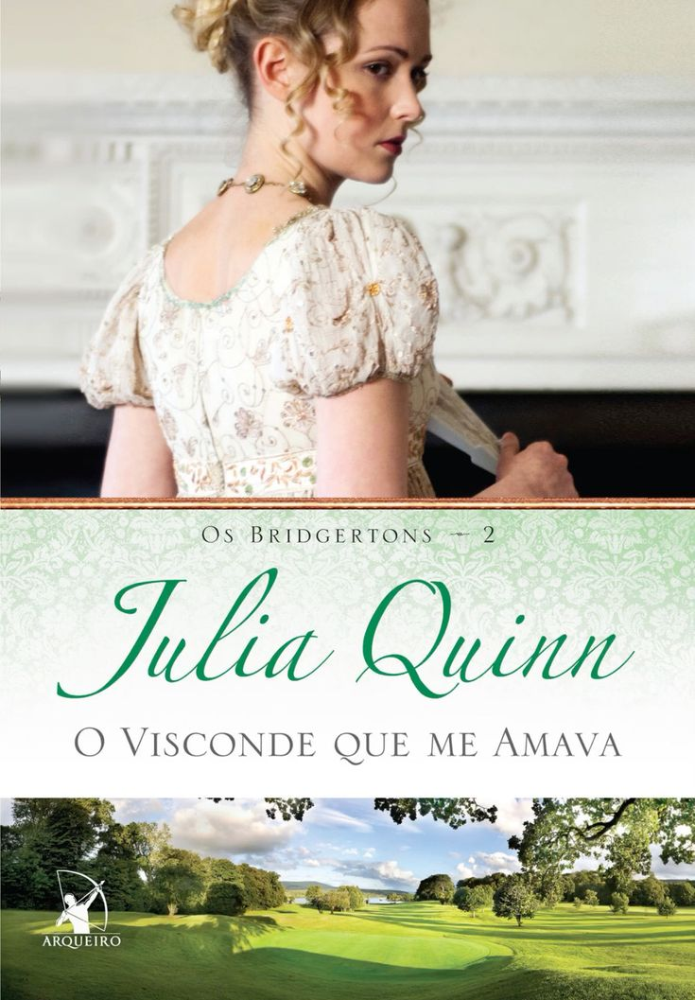
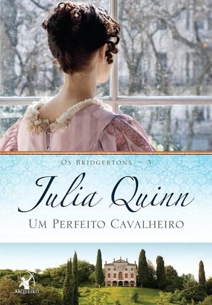
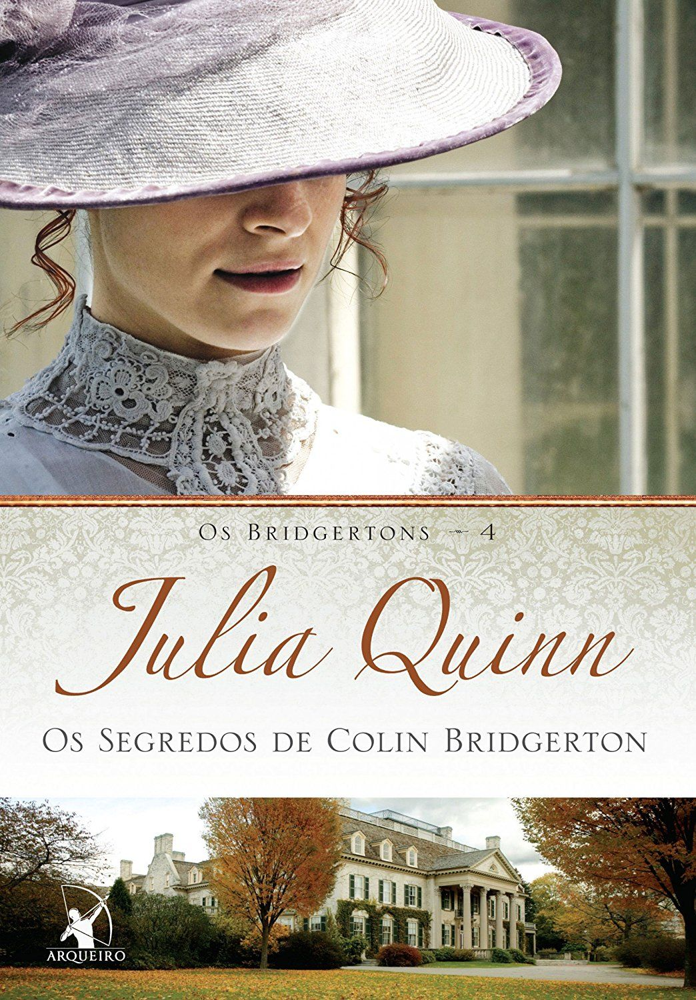
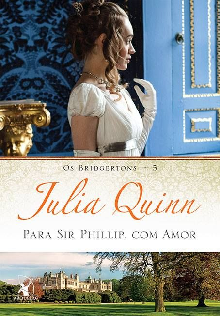
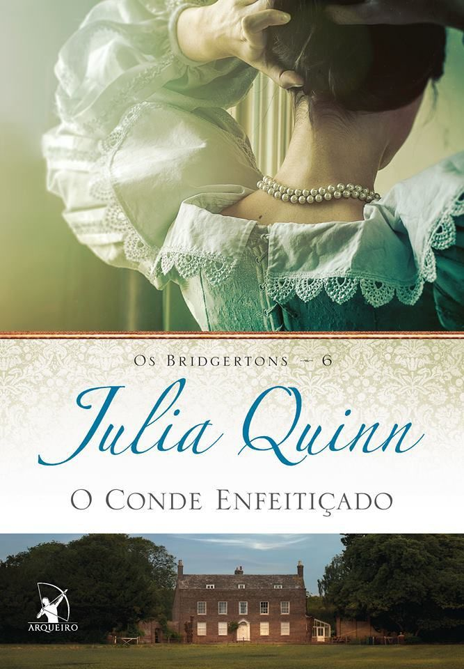
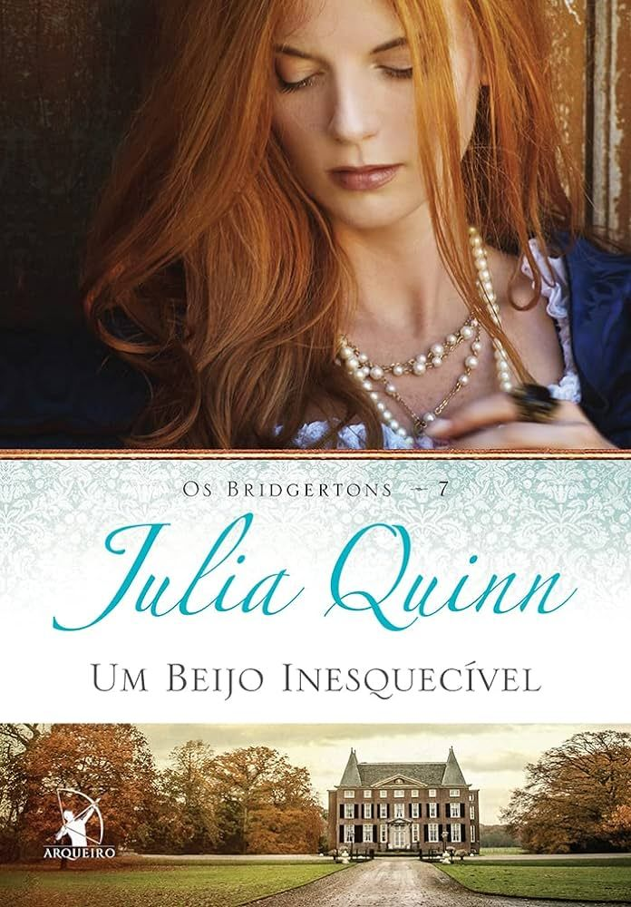
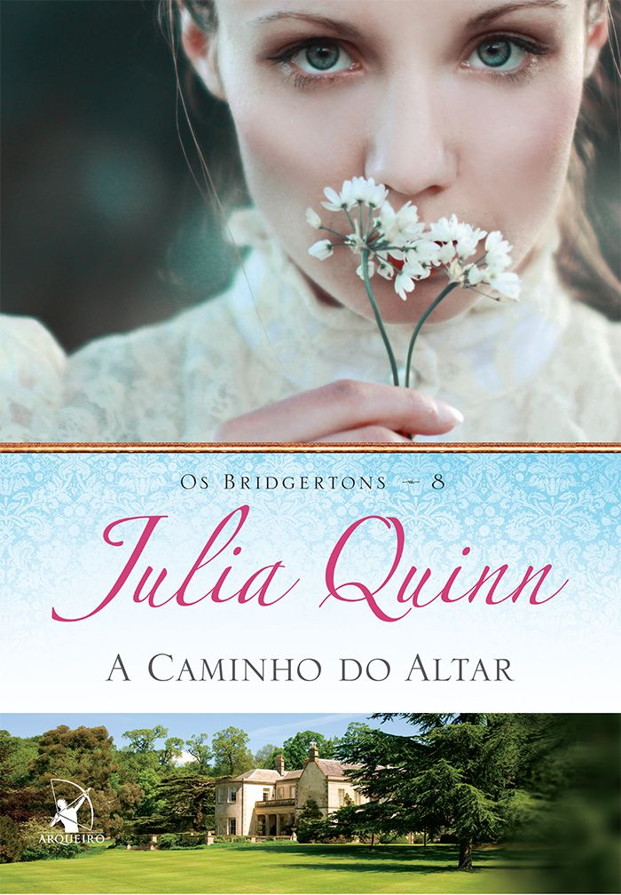
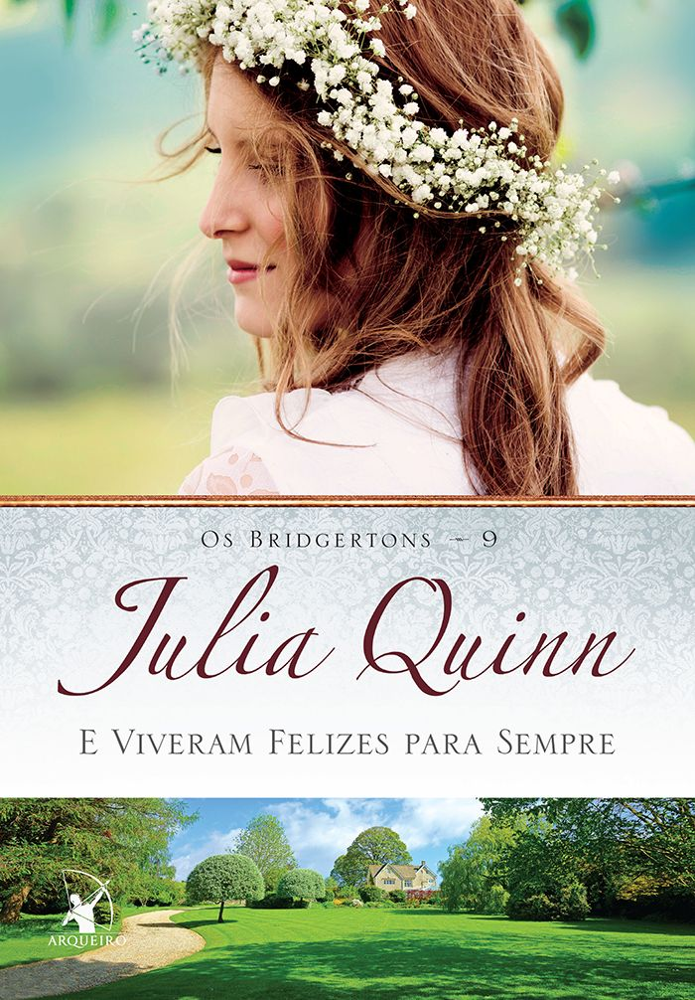
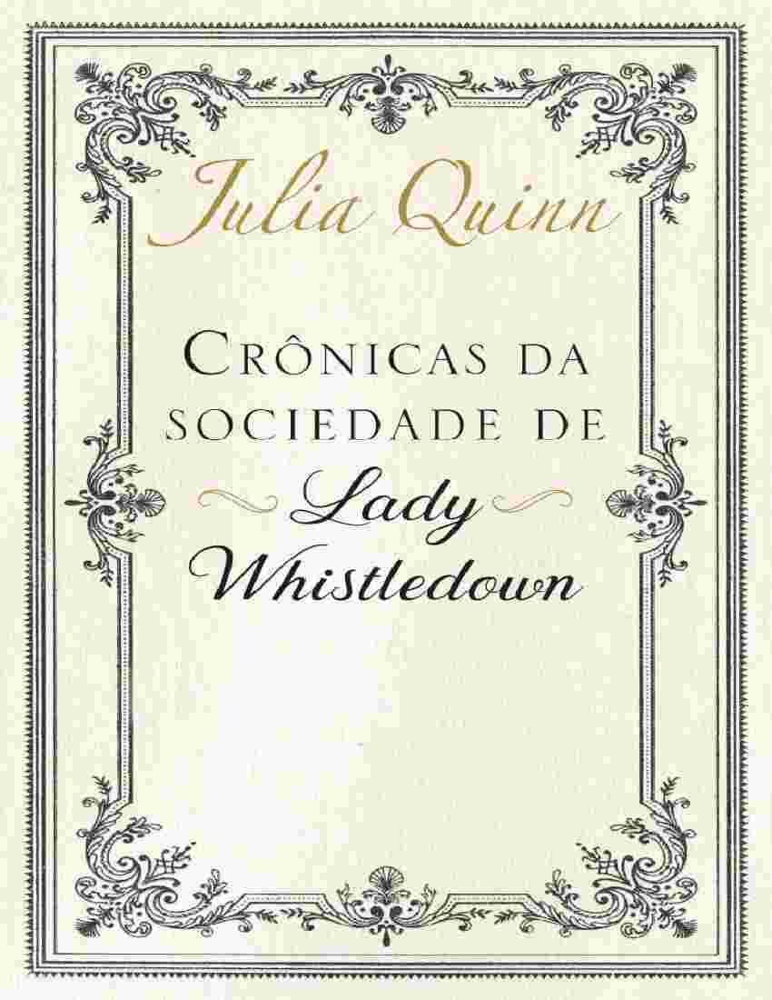

Livro 1: O Duque e Eu

Daphne Bridgerton, a quarta dos oito irmãos, está em sua primeira temporada na sociedade londrina. Apesar de sua beleza e inteligência, ela sofre com o estigma de ser vista apenas como uma "boa amiga" pelos pretendentes, o que dificulta a busca por um casamento baseado em afeto.
Simon Basset, o recém-chegado Duque de Hastings, está decidido a nunca se casar para encerrar a linhagem de seu pai negligente. Juntos, eles tramam um falso cortejo: Simon se livra das mães casamenteiras e Daphne atrai a atenção de novos pretendentes. No entanto, o desejo real começa a complicar o acordo.
Livro 2: O Visconde Que Me Amava

Anthony Bridgerton, o herdeiro do viscondado, é o libertino mais famoso de Londres. Convencido de que morrerá jovem como seu pai, ele decide se casar apenas por dever, escolhendo a "Diamante da Temporada", Edwina Sheffield, sob a condição estrita de não se apaixonar.
O obstáculo em seu plano é Kate Sheffield, a irmã mais velha de Edwina, que detesta Anthony e está determinada a protegê-la. Entre discussões acaloradas e partidas de pall-mall, Anthony e Kate descobrem que a linha entre o ódio e a paixão é perigosamente tênue.
Livro 3: Um Perfeito Cavalheiro

Sophie Beckett é filha ilegítima de um conde, relegada ao papel de criada por sua madrasta cruel após a morte do pai. Em uma noite mágica, ela consegue entrar escondida no baile de máscaras dos Bridgerton, onde conhece Benedict, o talentoso e sensível segundo irmão da família.
Após a meia-noite, Sophie desaparece, deixando Benedict obcecado em reencontrar a "dama de prata". Anos depois, seus caminhos se cruzam novamente em circunstâncias muito diferentes, forçando-os a lutar contra as rígidas barreiras sociais da Regência Britânica para ficarem juntos.
Livro 4: Os Segredos de Colin Bridgerton

Penelope Featherington passou anos nas sombras, observando o mundo e nutrindo um amor secreto por Colin Bridgerton. Aos 28 anos, ela já é considerada uma solteirona, mas esconde uma vida dupla vibrante que ninguém na alta sociedade ousa suspeitar.
Colin retorna de suas viagens internacionais sentindo-se perdido e sem propósito. Ao começar a passar mais tempo com Penelope, ele percebe que a mulher que ele sempre ignorou é a única que realmente o entende. Este volume foca na revelação de grandes segredos, incluindo a verdadeira identidade da colunista Lady Whistledown.
Livro 5: Para Sir Phillip, Com Amor

Eloise Bridgerton é conhecida por sua língua afiada e por rejeitar inúmeras propostas de casamento. Após a morte de uma prima distante, ela começa a trocar cartas com o viúvo Phillip Crane, buscando oferecer conforto, mas acaba desenvolvendo uma conexão profunda através das palavras.
Impulsiva, Eloise foge de casa para conhecê-lo pessoalmente, apenas para descobrir que Sir Phillip é um homem rústico, temperamental e sobrecarregado por dois filhos indisciplinados. O casal precisa aprender a lidar com as imperfeições um do outro para encontrar um novo tipo de amor.
Livro 6: O Conde Enfeitiçado

Michael Stirling, o libertino mais cobiçado de Londres, cometeu o erro de se apaixonar à primeira vista por Francesca Bridgerton apenas 36 horas antes dela se casar com seu primo e melhor amigo, John. Durante anos, ele guardou esse segredo, exilando-se na Índia para fugir da dor.
Após a morte trágica de John, Michael retorna como o novo Conde de Kilmartin. Francesca, agora viúva, deseja ter um filho e decide que é hora de se casar novamente. Michael precisa decidir se continuará sendo o amigo fiel ou se arriscará tudo para conquistar a mulher que sempre amou em silêncio.
Livro 7: Um Beijo Inesquecível

Hyacinth Bridgerton é a caçula da família, dotada de uma inteligência rápida e uma franqueza que intimida a maioria dos homens. Durante um evento social, ela conhece Gareth St. Clair, um homem charmoso que está em pé de guerra com o próprio pai e em posse de um antigo diário de família escrito em italiano.
Como Hyacinth domina o idioma, os dois se unem em uma caça ao tesouro literária para desvendar segredos do passado de Gareth que podem garantir seu futuro. Entre traduções e aventuras noturnas, eles descobrem que a maior fortuna está no sentimento que cresce entre eles.
Livro 8: A Caminho Do Altar

Gregory Bridgerton é o último solteiro da família e um romântico incurável que acredita no amor à primeira vista. Ele está convencido de que a Srta. Hermione Watson é a mulher de sua vida, mas ela está apaixonada por outro. Para ajudá-lo, a melhor amiga dela, Lucy Abernathy, decide intervir.
Lucy e Gregory acabam passando muito tempo planejando estratégias de conquista, até que ambos percebem que o amor verdadeiro não estava onde esperavam. O problema é que Lucy já está prometida a um lorde e o casamento está a poucos dias de acontecer, forçando Gregory a uma corrida desesperada contra o tempo.
Livro 9: E Viveram Felizes Para Sempre

Diferente dos volumes anteriores, este livro é uma coletânea de contos que funcionam como "segundos epílogos". Julia Quinn responde às perguntas que ficaram no ar após o fim de cada história individual, mostrando como está a vida dos oito irmãos anos após seus casamentos.
O livro explora desde o destino de Lady Whistledown até o que aconteceu com os filhos de cada casal. É um encerramento nostálgico e necessário para os fãs que acompanharam a trajetória da família Bridgerton e desejam um vislumbre final de seus destinos felizes.
Livro Extra: Crônicas da Sociedade de Lady Whistledown

Diferente dos romances focados exclusivamente na família Bridgerton, esta antologia reúne contos que exploram os escândalos da temporada sob o olhar afiado da misteriosa Lady Whistledown. A obra mergulha nos salões de baile e corredores escuros onde a reputação de um nobre pode ser destruída por uma única linha de texto impressa em papel barato.
Através de histórias interconectadas, acompanhamos novos casais que tentam encontrar o amor enquanto navegam pelas armadilhas sociais e pelos comentários ácidos da cronista. É uma peça fundamental para entender como a fofoca moldava o comportamento da elite londrina e como o anonimato de Whistledown lhe conferia um poder que nem mesmo os títulos mais nobres possuíam.
Gostou da jornada desta família icônica? Você pode encontrar a coleção completa e garantir todos os livros de uma vez através do Box Os Bridgertons.
Há também a opção de comprar cada livro individualmente, caso queira começar por um título específico ou montar sua coleção aos poucos.